În stînga este slide-ul din curs, în dreapta aceeași figură sau același tabel, calculat în browser din aceleași date. Butonul ▶ modifică parametrul pas cu pas; tabelele și exemplele lucrate se recalculează odată cu el. Abrevieri: BTC (Bitcoin), ETF (exchange-traded fund, fond tranzacționat la bursă), IBIT (iShares Bitcoin Trust), USDT (Tether), USDC (USD Coin), DAI (Dai), UST (TerraUSD), SVB (Silicon Valley Bank), FDIC (Federal Deposit Insurance Corporation), ACF (funcția de autocorelație), VR (raportul varianțelor), HAC (erori standard robuste la heteroscedasticitate și autocorelație), GARCH (generalised autoregressive conditional heteroskedasticity), GJR (modelul GARCH asimetric Glosten–Jagannathan–Runkle), IGARCH (GARCH integrat), AR(1) (proces autoregresiv de ordinul 1), CI (intervalul de încredere), HS (simulare istorică), VaR (value at risk), ES (expected shortfall), TE (tracking error), bp (puncte de bază), i.i.d. (independente și identic distribuite).
Bitcoin și Ethereum pe scurt · Cripto ca o clasă de active · Cozi și volatility clustering · Este piața cripto eficientă? · Corelația cu acțiunile și aurul · Bule și crahuri · ETF-urile spot pe Bitcoin · Stablecoins · Riscul unei poziții cripto
Bitcoin și Ethereum pe scurt
Prețul și oferta de Bitcoin
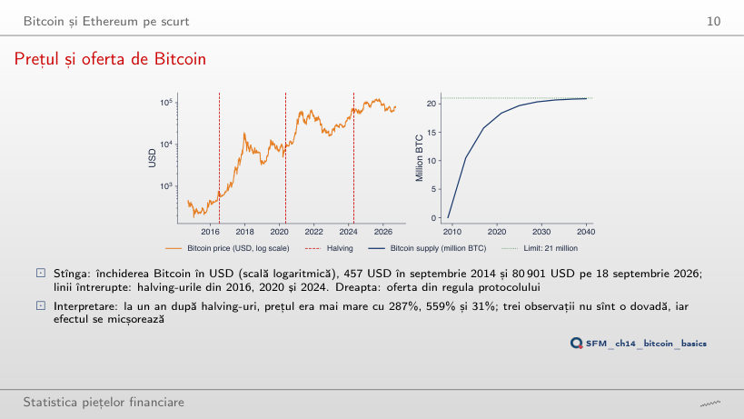
Răspuns
Cu 3,7%, față de 31% la un an. Pentru halving-urile din 2016 și 2020 creșterile la 180 de zile sînt 56% și 72%. Variația după o dată cunoscută din timp depinde mult de orizontul ales, iar trei observații nu permit o concluzie: pe o piață eficientă, reducerea anunțată a ofertei este deja în preț.
Cripto ca o clasă de active
Anualizarea cu frecvența reală (2/2)
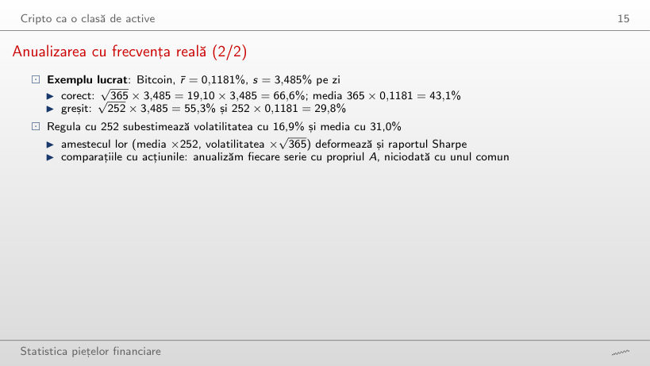
Exemplu lucrat: anualizarea cu frecvența reală
Răspuns
Cu 16,9% = 1 − √(252/365): 55,3% în loc de 66,6%. Media este subestimată mai mult, cu 31,0% = 1 − 252/365 (29,8% în loc de 43,1%), pentru că media crește cu A, iar volatilitatea doar cu √A.
Cinci active comparate
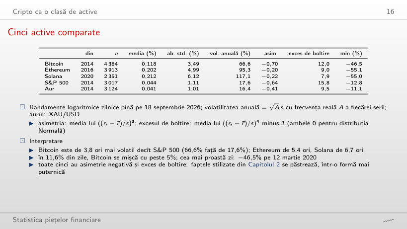
Statisticile randamentelor logaritmice zilnice (tabelul de pe slide)
Răspuns
De 3,1 ori (47,5% față de 15,2%), față de 3,8 ori pe întregul eșantion; Ethereum de 4,5 ori, Solana de 5,2 ori. Volatilitatea Bitcoin a scăzut, dar raportul rămîne mare.
Volatilitatea în timp
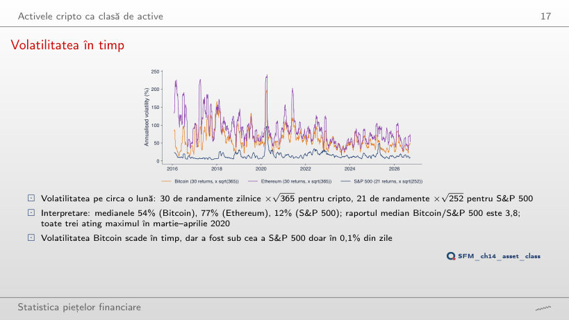
Răspuns
În 3,8% din zilele comune, față de 0,11% cu fereastra de 30 de zile. Pe 7 randamente estimările sînt mult mai zgomotoase, deci cele două curbe se intersectează mai des, deși raportul median rămîne 3,9.
Volatilitatea Bitcoin pe zile ale săptămînii
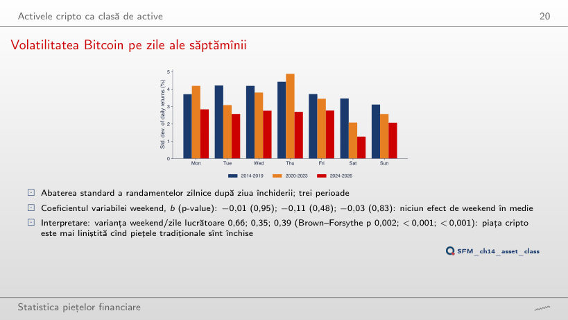
Răspuns
În 2022: 0,30 (Brown–Forsythe p < 0,001), apoi 2023 (0,31) și 2024 și 2026 (0,32). Înainte de 2020 raportul era mai aproape de 1: 0,66 în 2015 și 0,89 în 2016. Media din weekend nu diferă în niciun an semnificativ de cea din zilele lucrătoare.
Cozi și volatility clustering
Cozi groase: estimatorul Hill (2/2)
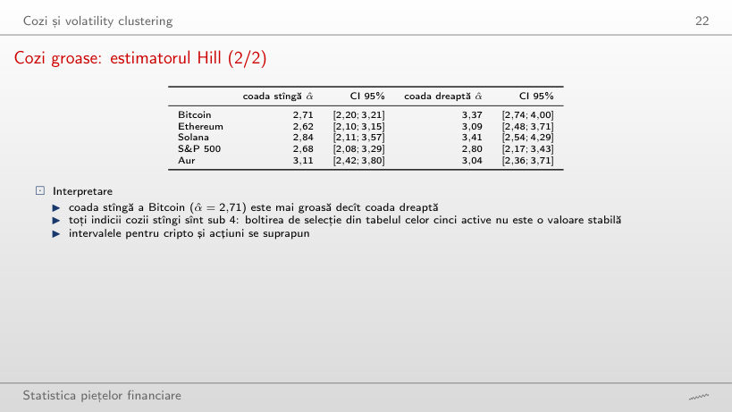
Indicii cozii estimați prin Hill (tabelul de pe slide)
Răspuns
Scade la 1,83 (k = 438), de la 2,71 cu k = 2,5%; cu k = 1% urcă la 3,83. Un k mare include observații din centrul distribuției, unde legea putere nu se aplică, iar estimația scade; de aceea k = 2,5% din n este o alegere, nu un rezultat.
Interpretarea ACF și a testului Ljung–Box
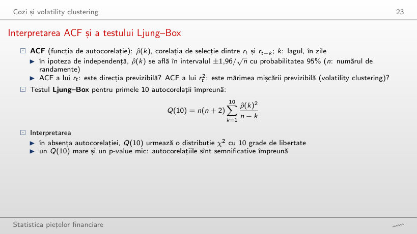
Statistica Ljung–Box Q(m) pentru rₜ și rₜ², cu p-value
Exemplu lucrat: statistica Ljung–Box
Răspuns
De la m = 10: Q(10) = 20,2 față de valoarea critică 18,3. La m = 12 nu mai este (20,6 < 21,0), iar la m = 30 nici (43,5 < 43,8). Autocorelațiile randamentelor sînt mici, deci verdictul depinde de numărul de laguri; pentru rₜ² Q(m) depășește valoarea critică la orice m.
Volatility clustering la Bitcoin
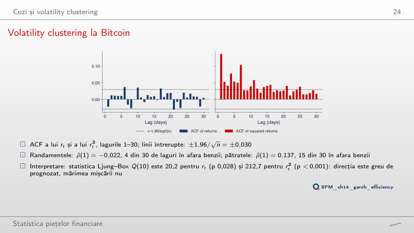
Răspuns
S&P 500: ρ̂(1) = 0,451, apoi Solana 0,247, Ethereum 0,175, Bitcoin 0,137 și aurul 0,090. Volatility clustering nu ține de nivelul volatilității: acțiunile au volatilitate mai mică, dar mai persistentă de la o zi la alta.
GARCH(1,1)-t pentru active cripto și tradiționale (2/2)
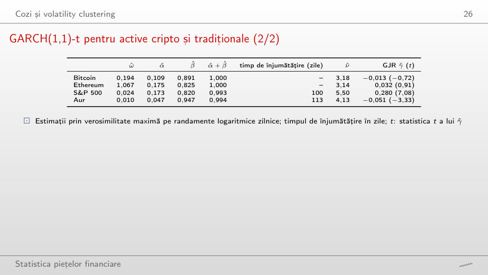
Estimațiile GARCH(1,1)-t și GJR (tabelul de pe slide) și partea rămasă dintr-un șoc
Exemplu lucrat: timpul de înjumătățire al unui șoc
Răspuns
Circa 25%: 0,9931²⁰⁰ = 0,251, adică doi timpi de înjumătățire de 100 de zile. Pentru aur rămîne 29%, pentru Bitcoin practic 100%, pentru că α̂ + β̂ = 1.
Volatilitatea condiționată: Bitcoin și S&P 500
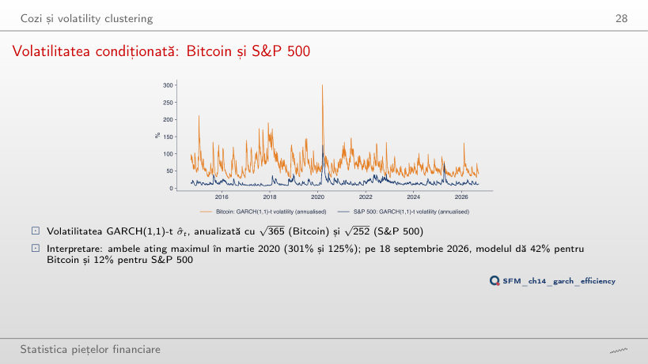
Răspuns
Circa 169%, de la 54% pentru ziua următoare. Cu α̂ + β̂ = 1, varianța prognozată crește în fiecare zi cu ω̂ = 0,194, fără o revenire la un nivel de termen lung. Pentru S&P 500 prognoza urcă de la 11,5% la 28,4%, spre nivelul de termen lung de 29,4%.
Este piața cripto eficientă?
Testele raportului varianțelor pe întregul eșantion
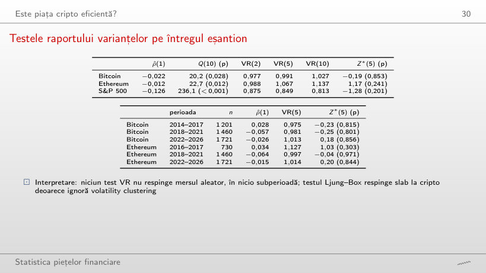
Întregul eșantion (primul tabel de pe slide)
Subperioade (al doilea tabel de pe slide)
Răspuns
Da, pentru S&P 500: Z*(2) = −2,30 (p 0,022), pentru că VR(2) = 0,875 ≈ 1 + ρ̂(1) reflectă revenirea zilnică a indicelui spre medie. Bitcoin (−0,88) și Ethereum (−0,43) nu resping. Respingerea vine din piața considerată cea mai eficientă, nu din cripto.
Eficiența în timp
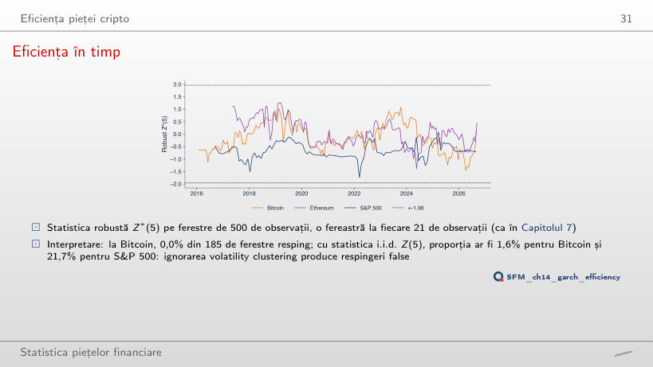
Răspuns
Circa 50% (50,5%), față de 21,7% cu ferestre de 500, iar cu Z* robust tot 0%. O fereastră mai lungă dă mai multă putere unui test greșit: ignorarea volatility clustering produce respingeri false.
Corelația cu acțiunile și aurul
Măsurarea corelației între calendare diferite
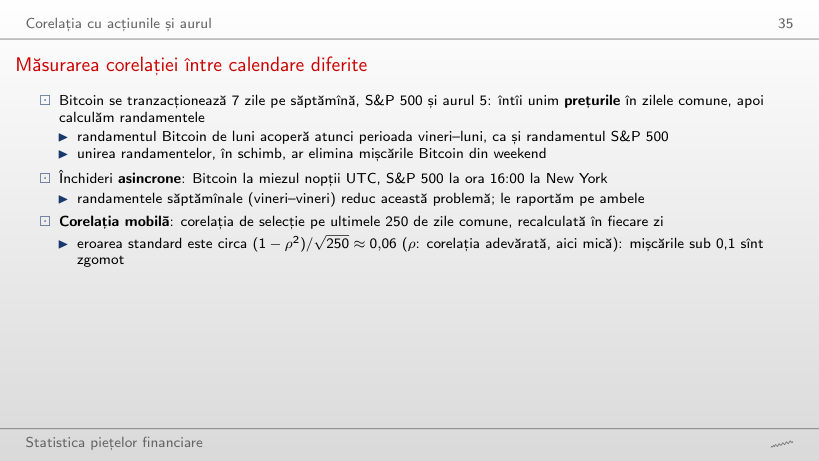
Exemplu lucrat: corelația pe o fereastră mobilă
Răspuns
Peste: 0,67, pe 25 octombrie 2024. Eroarea standard lîngă ρ = 0 este 1/√60 = 0,13, față de 0,063 cu 250 de zile: ferestrele scurte dau valori extreme mai mari.
Corelația mobilă cu acțiunile și aurul
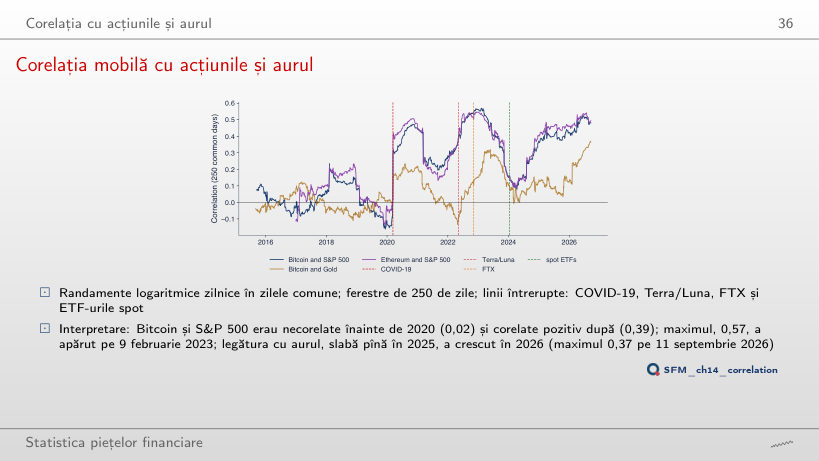
Răspuns
Circa 0,25, pe 18 septembrie 2026, față de 0,37 pe 11 septembrie 2026 cu 250 de zile. Fereastra lungă amestecă anul 2026 cu anii 2024–2025, cînd corelația era 0,12, deci creșterea din 2026 apare diluată.
Corelația an cu an
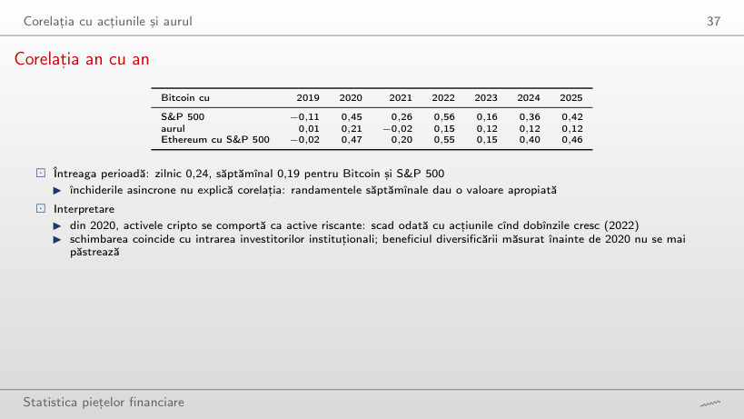
Corelația an cu an (tabelul de pe slide arată anii 2019–2025)
Răspuns
Mai mică: 0,43 față de 0,56; pe toată perioada 0,19 față de 0,24. Închiderile asincrone ar fi trebuit să micșoreze corelația zilnică, nu pe cea săptămînală; pe un an rămîn doar circa 50 de randamente săptămînale, iar estimația este mai zgomotoasă.
Trei episoade de criză
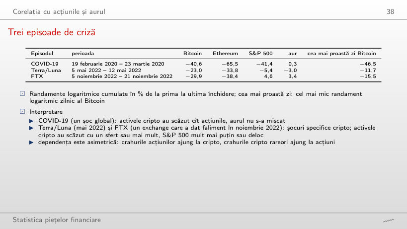
Randamente logaritmice cumulate (%), tabelul de pe slide
Răspuns
A crescut cu 4,6%, iar aurul cu 3,4%, în timp ce Bitcoin a pierdut 29,9% și Ethereum 38,4%. Un șoc specific pieței cripto nu a ajuns la acțiuni.
Acoperire sau refugiu?
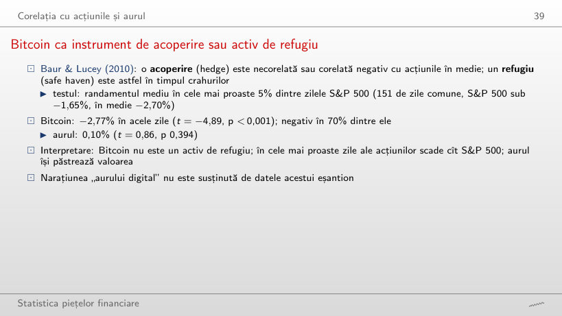
Exemplu lucrat: testul de refugiu
Răspuns
−0,39% (t = −1,27, p 0,215), deci nu diferă semnificativ de zero în cele 31 de zile, în timp ce Bitcoin are −6,30% (t = −3,23, p 0,003). Aurul își păstrează valoarea, fără să crească în cele mai grele zile.
Bule și crahuri
Drawdown-ul
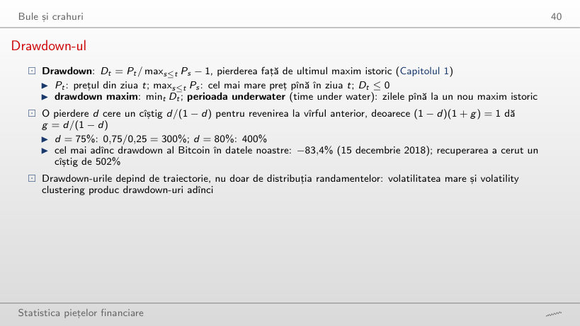
Exemplu lucrat: drawdown-ul maxim și cîștigul necesar
Răspuns
1 556% = 0,940/0,060: din 6,0% din valoarea de record trebuie să urce de circa 16,6 ori. Ethereum a revenit la record pe 2 februarie 2021.
Drawdown-urile Bitcoin, Ethereum și S&P 500
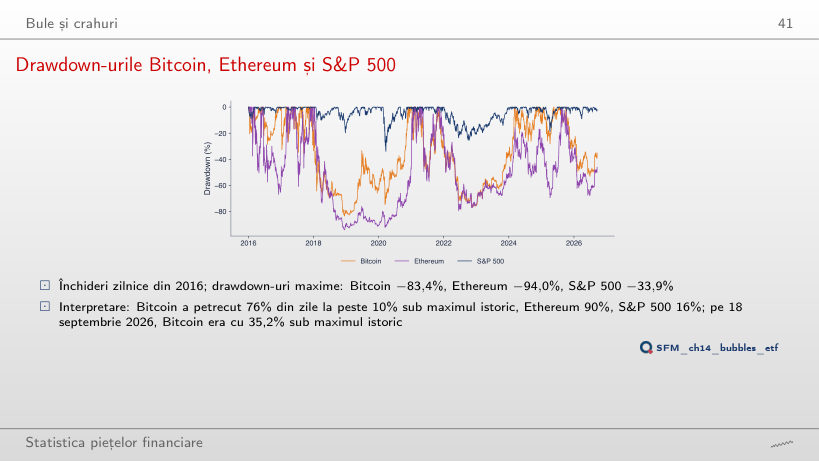
Răspuns
−66,9%, față de −83,4% din 2016. Drawdown-ul se măsoară față de cel mai mare preț din eșantion, iar vîrful din noiembrie 2021 nu mai este inclus. Ethereum −74,1%, S&P 500 −25,4%.
Marile drawdown-uri ale Bitcoin
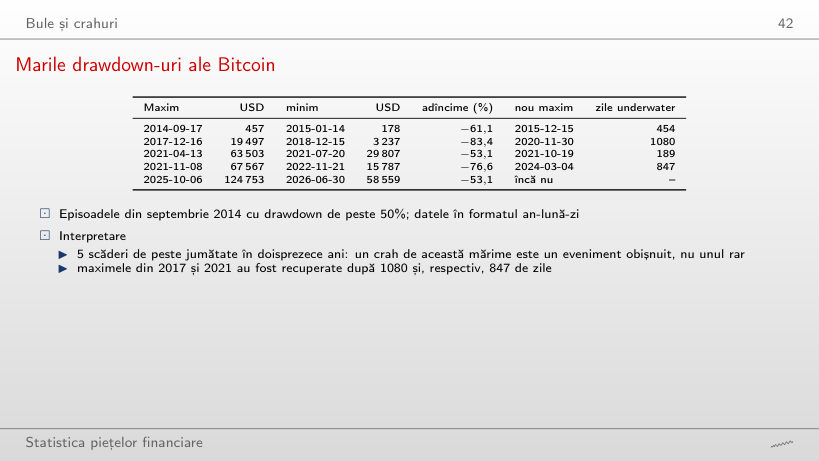
Episoadele Bitcoin din septembrie 2014 (tabelul de pe slide)
Răspuns
Opt: la cele cinci de pe slide se adaugă trei scăderi din 2017 (−32,6%, −34,8% și −35,5%) care au fost recuperate în cîteva luni.
ETF-urile spot pe Bitcoin
Volatilitatea și ponderea weekendului în jurul ETF-urilor
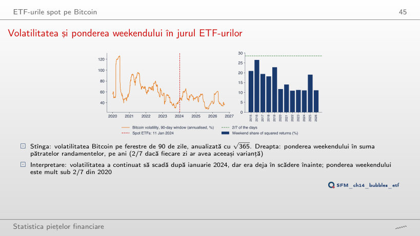
Răspuns
În 2025: 19,0%, față de 10,9–14,0% în ceilalți ani; tot sub 2/7 = 28,6%, valoarea pentru o varianță egală în fiecare zi.
Înainte și după: o comparație simplă
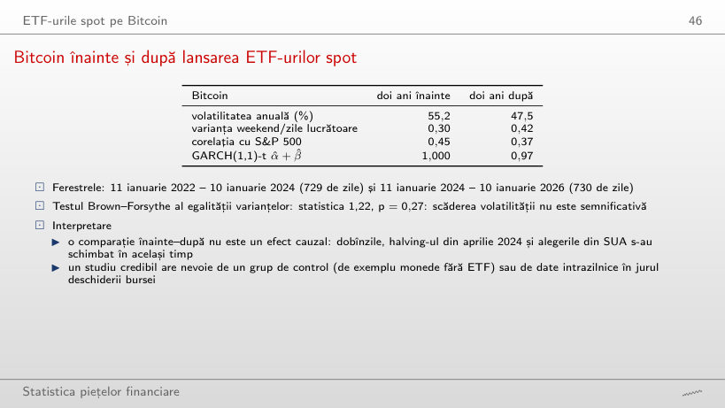
Bitcoin înainte și după 11 ianuarie 2024 (tabelul de pe slide)
Răspuns
Da (p 0,001), dar volatilitatea a crescut, de la 44,4% la 52,9%. Cu 2,5 ani este tot semnificativă (p 0,008), dar în sens invers (de la 57,2% la 48,0%), iar cu doi ani nu este (p 0,27). Rezultatul depinde de fereastră, deci comparația înainte–după nu măsoară un efect cauzal al ETF-urilor.
Cît de bine urmărește un ETF prețul Bitcoin?
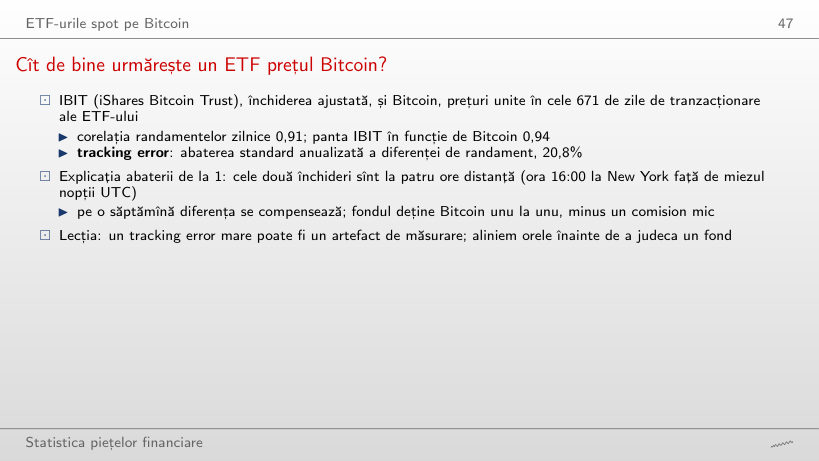
Exemplu lucrat: tracking error
Răspuns
8,9% pe an, cu corelația 0,98, față de 20,8% zilnic. Diferența dintre închiderea de la New York și cea de la miezul nopții UTC se compensează în cîteva zile.
Stablecoins
Oferta de stablecoins
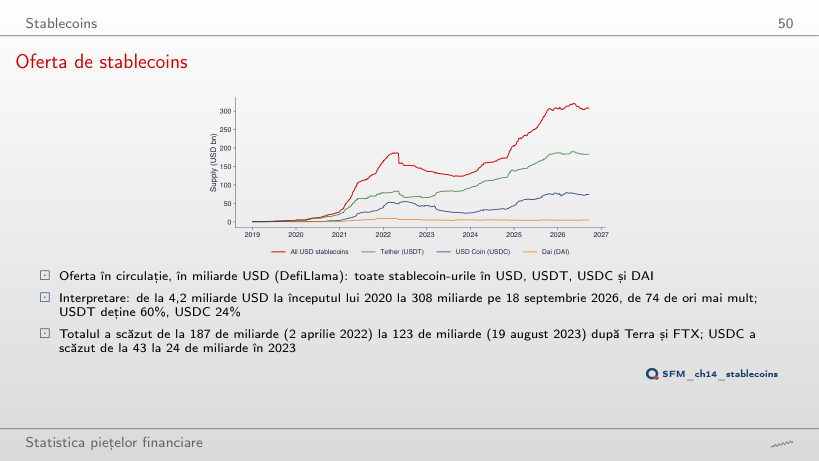
Răspuns
Cu 34,5% = 1 − 122,7/187,4. Pe slide-uri totalul de pe 18 septembrie 2026 este 308 de miliarde USD; descărcarea din 4 noiembrie 2026 dă 303 de miliarde pentru aceeași dată, pentru că DefiLlama își revizuiește istoricul.
Abaterea de la paritate în puncte de bază
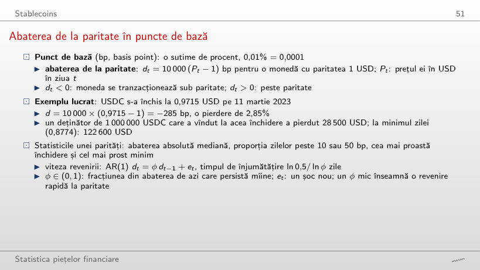
Exemplu lucrat: abaterea de la paritate și pierderea
Răspuns
−1 030 bp = 10 000 × (0,8970 − 1), adică −10,3%. Minimul USDC din aceeași zi a fost −1 226 bp.
Abaterile de la paritate pentru USDT, USDC și DAI
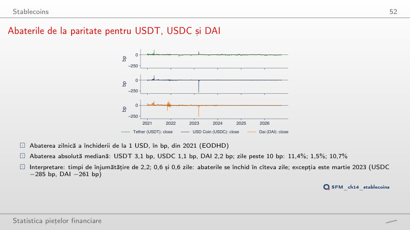
Statisticile parității din 2021 (cifrele de pe slide)
Răspuns
În 0,57% din zile (12 din 2 087), față de 0,14% la USDT și la USDC; la pragul de 10 bp proporțiile sînt 10,7%, 11,4% și 1,5%.
Depeg-ul USDC, zi de zi
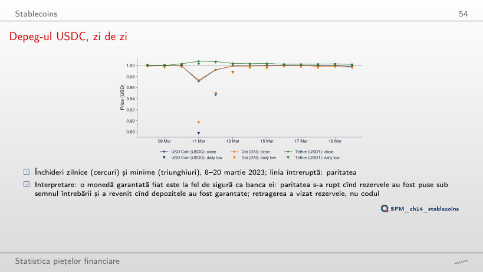
Răspuns
La 0,9989 USD, adică −11 bp, înapoi aproape de paritate după garantarea depozitelor SVB din seara de 12 martie (U.S. Treasury, Federal Reserve și FDIC, 2023). Pe 11 martie închiderea fusese 0,9715 (−285 bp). USDT a închis pe 13 martie la +39 bp.
Prăbușirea UST, mai 2022
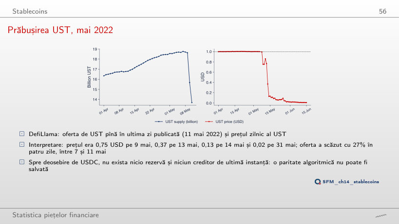
Răspuns
Cu 27%, de la 18,8 la 13,7 miliarde UST, în patru zile. Prețul a scăzut mai mult: 0,75 USD pe 9 mai, 0,37 pe 13 mai și 0,02 pe 31 mai.
Riscul unei poziții cripto
VaR 1% și ES 2,5% în dolari
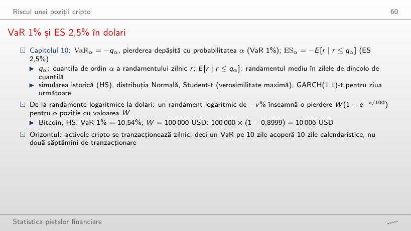
Exemplu lucrat: de la randamentul logaritmic la dolari
Răspuns
32 037 USD = 1 000 000 × (1 − e^(−0,03256)). Citit ca randament simplu, același număr ar da 32 562 USD.
Patru metode, trei active
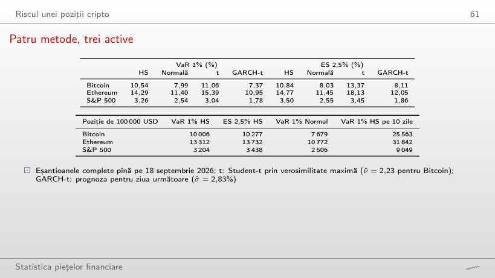
VaR și ES în procente (primul tabel de pe slide)
În USD, pentru o poziție de 100 000 USD (al doilea tabel de pe slide)
Răspuns
Nu: 5,62% față de 5,33% istoric, cu 5% peste. Distribuția Bitcoin are cozi groase și un centru mai ascuțit decît distribuția Normală: la 1% distribuția Normală subestimează pierderea (7,99% față de 10,54%), la 5% o supraestimează.
Interpretarea cifrelor de risc
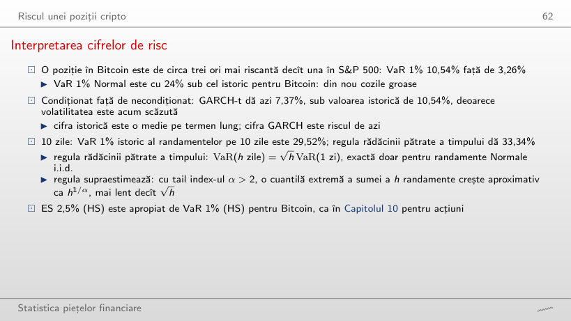
Exemplu lucrat: regula rădăcinii pătrate a timpului
Răspuns
Mai mult: 57,7% față de 48,2%, cu 20% peste. Cu un tail index între 2 și 4, cuantilele extreme ale sumelor cresc mai încet decît √h.
Backtesting: testul Kupiec
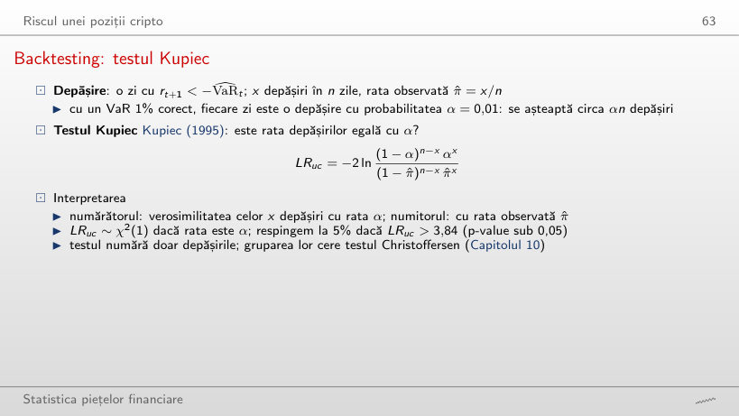
Exemplu lucrat: testul Kupiec
Răspuns
De la 22 la 43. HS (29) și GARCH-t (41) sînt în interval; 41 este aproape de margine (LR_uc = 2,45, p 0,12). Testul respinge și prea puține excepții, nu doar prea multe.
Backtesting pentru VaR 1% al Bitcoin
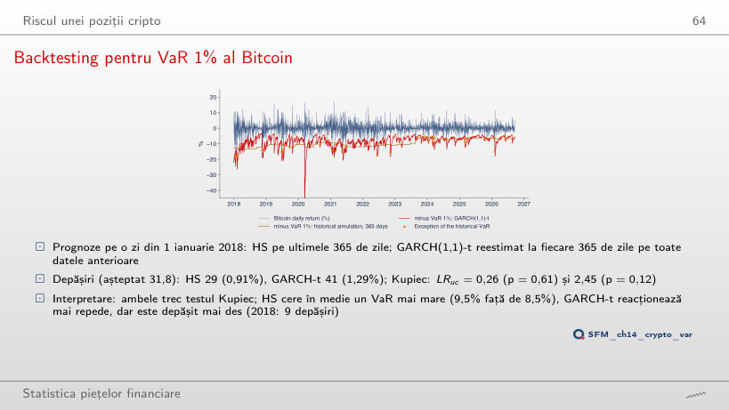
Răspuns
Respinge, pentru prea puține excepții: 21 (0,66%), p 0,04. Fereastra lungă păstrează pierderile din 2018–2022 și dă un VaR mediu de 10,1%, prea mare pentru anii mai calmi.
Datele cursului din data/market (pînă la 18 septembrie 2026): închiderile zilnice ale Bitcoin, Ethereum, Solana, S&P 500, aurului (XAU/USD) și ale ETF-ului IBIT; închiderile și minimele zilnice ale USDT, USDC și DAI din 2021. Oferta de stablecoins și seriile TerraUSD vin de la DefiLlama, descărcate cu funcția capitolului pe 4 noiembrie 2026 și tăiate la 18 septembrie 2026; unde descărcarea diferă de valorile de pe slide-uri, pagina le arată pe amîndouă. Estimațiile GARCH(1,1)-t și GJR, volatilitățile condiționate, ajustările Student-t și prognozele GARCH-t ale backtesting-ului vin din codul capitolului (Quantlets/Ch_14). Browserul recalculează din prețuri randamentele, statisticile descriptive, indicii Hill, ACF și testul Ljung–Box, rapoartele varianțelor, corelațiile, drawdown-urile, testele de weekend și de refugiu, abaterile de la paritate, VaR, ES și testul Kupiec. Alte ferestre, praguri, orizonturi, perioade și niveluri α sînt rulări suplimentare ale aceluiași cod; persistența GARCH pe ferestre ETF de 1, 1,5 și 2,5 ani este o reestimare suplimentară cu codul capitolului, iar prognozele GARCH pe mai multe zile și partea rămasă dintr-un șoc sînt calcule suplimentare din estimațiile de pe slide.